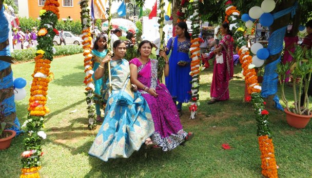

Odisha
- Home
- Food
- Fashion
- Festival
- Kalinga Mahotsav
- Raja Parba

Raja Parba
Raja Parba is a four-day long festival which is fondly celebrated all over the state of Orrisa. This festival is celebrated to bring prosperity in agriculture fields and also to celebrate womanhood. The festival is dedicated to Basu- Mata , the Earth Goddess and during this festival, all the agriculture activities are stopped to allow the Goddess to rest. It is believed that during this period the Goddess undergoes her menstrual cycle, and to respect the womanhood of the Mother Earth, all the activities such as ploughing, plucking, cutting trees, that can hurt nature are preventeds.

Kalinga Mahotsav
The festival has an interesting story connected with its celebration. A major part of Orrisa was earlier known as Kalinga, the land which is seen brutal murders and death of martyrs during the reign of Ashoka. It is at this place that Ashoka decided to live a peaceful and non- violent life. Kalinga Mahotsav is celebrated to mark the victory of peace over war. To pay tribute to the martyrs of Mauryan dynasty various Martial art acts are performed on the outskirts of Bhubaneswar at Dhauli Shanti Stupa. The vibrant and brave performances of martial arts not only attracts the people of Orissa but from all over the world. - Raja Parba
- Kalinga Mahotsav